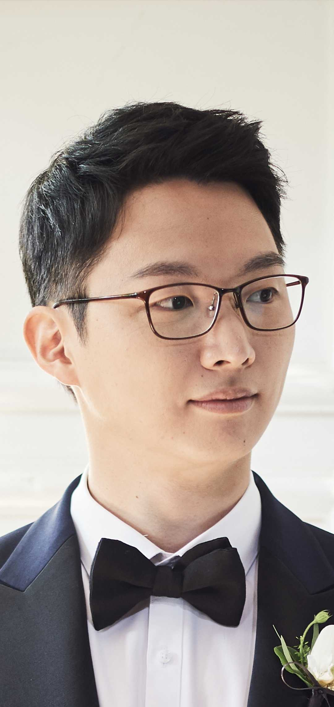

Sung Eun Kim, MD
From the operating room to the algorithm — building AI that understands medicine
Surgeon-scientist with experience in 1,000+ knee surgeries and 40+ publications including Nature Medicine. I build AI systems grounded in the clinical reality of a decade in medicine.
About Me
After seven years and over a thousand knee surgeries, I realized: the patterns I was seeing in the operating room could be taught to machines — if someone who understood both sides built the bridge.
My path started in the trenches of public health — as an Epidemic Intelligence Service Officer during South Korea's MERS crisis, earning the Highest Commendation from the Minister of Health. That experience crystallized my belief that healthcare needs smarter systems, not just harder-working doctors.
Now, as a postdoctoral fellow at Harvard Medical School working with Dr. Pranav Rajpurkar, I develop and validate AI models for medical imaging interpretation, clinical decision support, healthcare workflow optimization, and robotic/physical AI systems — always grounded in real-world clinical needs.
I don't just build AI that works on benchmarks. I build AI that works in hospitals — because I've been the doctor waiting for better tools.
Clinical Foundation
7+ years of orthopedic surgery experience including 1,000+ knee surgeries, providing deep insight into clinical workflows and diagnostic challenges
Research Impact
40+ peer-reviewed publications spanning clinical outcomes research and AI applications in medical imaging, including Nature Medicine
Global Collaboration
International research network spanning Harvard Medical School, Seoul National University, and collaborators across Asia, Europe, North America, and South America
Research Focus
My research aims to bridge the gap between AI innovation and clinical implementation, developing systems that work in the complexity of real healthcare environments.
Medical Vision AI
Developing multimodal AI systems for medical image interpretation, including knee MRI analysis with 3D spatial reasoning and radiology report generation with hallucination detection.
Clinical Decision Support
Building predictive models for surgical outcomes and patient-reported measures, enabling personalized treatment planning and evidence-based clinical decisions.
Healthcare AI Evaluation
Creating simulation frameworks like the Clinical Environment Simulator (CES) to assess AI performance under realistic hospital conditions beyond static benchmarks.
Robotic & Physical AI
Exploring autonomous medical robotics and physical AI systems, including robotic-assisted surgery and intelligent automation for clinical procedures.
Patent
Method and Apparatus for Calculating Indicators Related to Knee Osteoarthritis Using Electromyography Data
Publications
All Publications
40+ PublicationsCRIMSON: A Clinically-Grounded LLM-Based Metric for Generative Radiology Report Evaluation
Effects of axial malrotation on posterior tibial slope measurement: a digitally reconstructed radiograph study enabling automated quality assessment
The Doctor Will Agree With You Now: Sycophancy of Large Language Models in Multi-Turn Medical Conversations
Automated posterior tibial slope measurement using lateral knee radiographs: a novel landmark-based approach using deep learning
External validation of a novel landmark-based deep learning automated tibial slope measurement algorithm applied on short radiographs obtained in patients with ACL injuries
Low Cognitive Function and Somatic Psychological Symptoms Are Correlated with Greater Risk of Delirium After Total Knee Arthroplasty: A Prospective Cohort Study
Posterior tibial slope as a risk factor for anterior cruciate ligament tears: a retrospective study using automated measurement
Rexgroundingct: A 3d chest ct dataset for segmentation of findings from free-text reports
Superior One-year Forgotten Joint Scores with cruciate-retaining mobile bearings versus posterior-stabilized mobile and fixed bearings in a contemporary total knee system
Experience
Postdoctoral Research Fellow
Harvard Medical School, Department of Biomedical Informatics
PI: Pranav Rajpurkar. Developing AI systems for medical applications.
Associate Research Professor
Seoul National University Hospital, Biomedical Research Institute
National Strategic Technology Research Institute. Leading AI research across orthopedics and diverse medical fields.
Ph.D. Candidate in Orthopedic Surgery
Seoul National University Graduate School of Medicine
AI applications in orthopedic surgery research.
Clinical & Research Fellow (Knee Surgery)
Seoul National University Hospital
Specialized training in knee arthroplasty, sports medicine, and robotic surgery under Profs. Han and Ro.
M.S. in Orthopedic Surgery
Seoul National University Graduate School of Medicine
Orthopedic Surgery Resident
Seoul National University Hospital
Comprehensive orthopedic training. Received Best Resident Award (2020).
Intern
Seoul National University Hospital
Epidemic Intelligence Service Officer
Korea Disease Control and Prevention Agency
Public health service during MERS crisis. Received Highest Commendation from Minister of Health.
Doctor of Medicine (M.D.)
Seoul National University College of Medicine
Milestones
Published in Nature Medicine
CES framework for dynamic AI evaluation in clinical environments. Co-first author with Luo L.
3DReasonKnee at PSB 2026
3D spatial reasoning for knee MRI interpretation by vision-language models. Co-first author.
FactCheXcker at CVPR 2025
Hallucination detection for chest X-ray report generation models.
KSRR Citation Award
Two highly cited articles in knee surgery imaging recognized by Korean Society of Knee Surgery and Related Research.
AAOS Presentation
Automated posterior tibial slope measurement using deep learning, presented at the American Academy of Orthopaedic Surgeons.
CPAK Paper in JBJS
Deep learning radiographic analysis of 17,365 knees published in J Bone Joint Surg Am. First author.
Joined Harvard Medical School
Postdoctoral Research Fellow with Dr. Pranav Rajpurkar, Dept of Biomedical Informatics.
Best Paper Award, KSRR
Enhanced deep learning alignment measurement across diverse institutional imaging protocols.
4 Presentations at ESSKA, Milan
CPAK classification, HTO outcomes, PTS measurement, and UKA outcomes at the European Society of Sports Traumatology.
Best Oral Presentation, Korean CAOS
CPAK classification presented at the 18th Korean Computer Assisted Orthopedic Surgery Congress.
Board-Certified Orthopedic Surgeon
Seoul National University Hospital, after 4-year residency.
Best Resident Award
SNUH Department of Orthopedic Surgery.
Minister of Health Commendation
For MERS crisis response as Epidemic Intelligence Service Officer.
Doctor of Medicine, SNU
Seoul National University College of Medicine.
Awards & Recognition
Highest Commendation from Minister of Health
Republic of Korea — Recognized for dedication during MERS crisis response (2017)
Harvard-SNU Trainee Position
Selected for collaborative research program in AI development for knee MRI (2024)
Citation Award — KSRR
Recognized for two highly cited articles in 2024 (May 2025)
Best Paper Award — KSRR
Deep learning model for alignment measurement across imaging protocols (2024)
Best Oral Presentation
Korean Society of Computer-Assisted Orthopaedic Surgery (2023)
Best Resident Award
Seoul National University Hospital, Department of Orthopedic Surgery (Dec 2020)
Academic Scholarships
Superior Academic Performance, Merit-Based, and College Scholarships — SNU (2010–2013)
Talks & Presentations
Assessment of Large Multimodal Reasoning Model Performance and Chain-of-Thought Quality in Chest Radiograph Interpretation
RSNA Cutting Edge 2025
Automated Posterior Tibial Slope Measurement Using Lateral Knee Radiographs: A Novel Landmark-Based Approach Using Deep Learning
AAOS Annual Meeting — March 2025, United States
Medial Joint Opening Rather Than Mechanical Axis Deviation Determined Clinical Outcomes After High Tibial Osteotomy
ESSKA 21st Congress — May 2024, Milan, Italy
CPAK Classification According to Kellgren and Lawrence Grade
ESSKA 21st Congress — May 2024, Milan, Italy
Automated Posterior Tibial Slope Measurement Using Deep Learning in Lateral Knee Radiographs
ESSKA 21st Congress — May 2024, Milan, Italy
Does CPAK Change in UKA Correlate with Patient-Reported Outcome Measures?
ESSKA 21st Congress — May 2024, Milan, Italy
CPAK Classification According to Kellgren and Lawrence Grade
Korean Society of CAOS — October 2023, Korea
Medial Joint Opening Rather Than Mechanical Axis Deviation Determined Outcomes After HTO
Korean Orthopaedic Association 67th Congress — October 2023, Korea
Anatomic vs Dome Patellar Design in TKA: A Randomized Clinical Trial
Korean Orthopaedic Association 67th Congress — October 2023, Korea
Prospective Multi-center Outcomes Study of Persona Knee System in TKA: Mid-term Outcomes
Korean Orthopaedic Association 66th Congress — October 2022, Korea
Low Muscle Mass Is an Independent Risk Factor for Postoperative Blood Transfusion in TKA
Korean Knee Society 40th Congress — May 2022, Korea
Muscle Activation and Sagittal Knee Biomechanics in Patellofemoral Pain Syndrome
Korean Orthopaedic Association 65th Congress — October 2021, Korea
Pain Control After TKA: IV PCA vs Continuous vs Single Adductor Canal Block
Korean Orthopaedic Association 64th Congress — October 2020, Korea
Quantitative Evaluation of Gait Features After TKA: Comparison with Age and Sex-Matched Controls
Korean Orthopaedic Association 63rd Congress — October 2019, Korea
The Doctor Will Agree With You Now: Sycophancy of LLMs in Multi-Turn Medical Conversations
EACL 2026 — HeaLing Workshop
Do Mixed-Vendor Multi-Agent LLMs Improve Clinical Diagnosis?
EACL 2026 — HeaLing Workshop
Professional Service & Memberships
Ad hoc Peer Reviewer
Reviewed 40+ manuscripts for high-impact international journals in orthopedic surgery, musculoskeletal research, and medical artificial intelligence.
Professional Memberships
Beyond the Lab
When I'm not developing AI models or reviewing MRI scans, I'm a proud husband and father. My loving wife and our three sons are my greatest energizers—they remind me every day why advancing healthcare matters.
I'm an avid tennis enthusiast and never miss a chance to hit the courts—I won the National Medical Doctors Tennis Tournament in 2023, was runner-up at the KOA Tennis Tournament, and championed the Harvard-MIT Korean Tennis Championship in 2025. There's something about the sport that mirrors research: strategy, persistence, and the thrill of a well-executed play.
I also love to travel and explore new places around the world. Each journey brings fresh perspectives that often inspire my work in unexpected ways. In 2023, I won the Grand Prize at the SNU Hospital Group Slogan Contest with "Beyond Excellence."
Curriculum Vitae
Download my full CV for a complete overview of my academic and professional background.
Download CV (PDF)Let's Collaborate
I'm always excited to connect with researchers, clinicians, and organizations interested in advancing healthcare through AI. Whether you have a research idea, collaboration opportunity, or just want to chat about the future of medicine—let's talk.